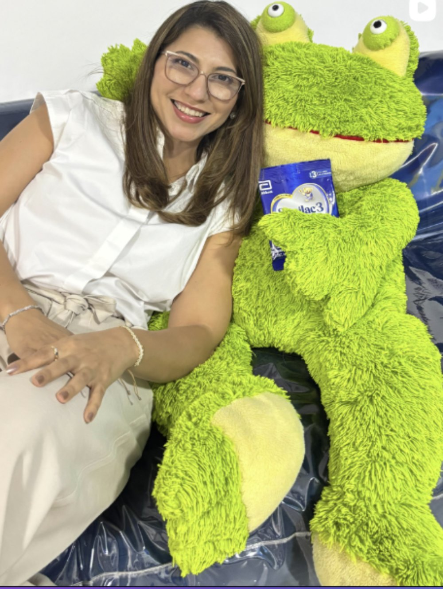
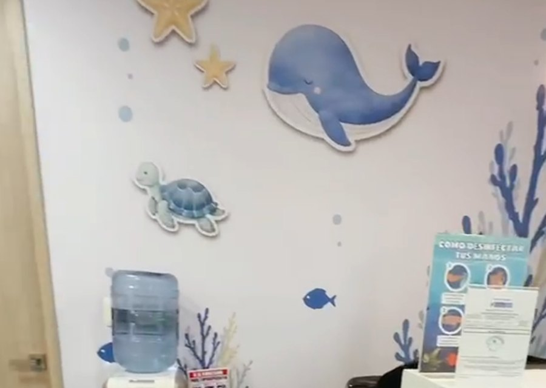
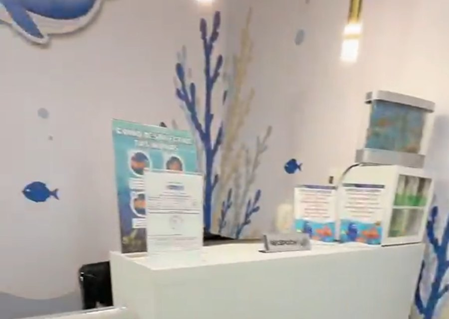
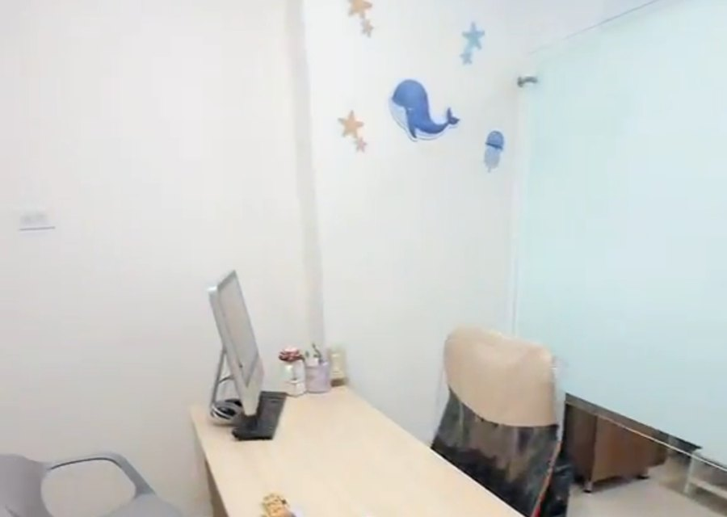
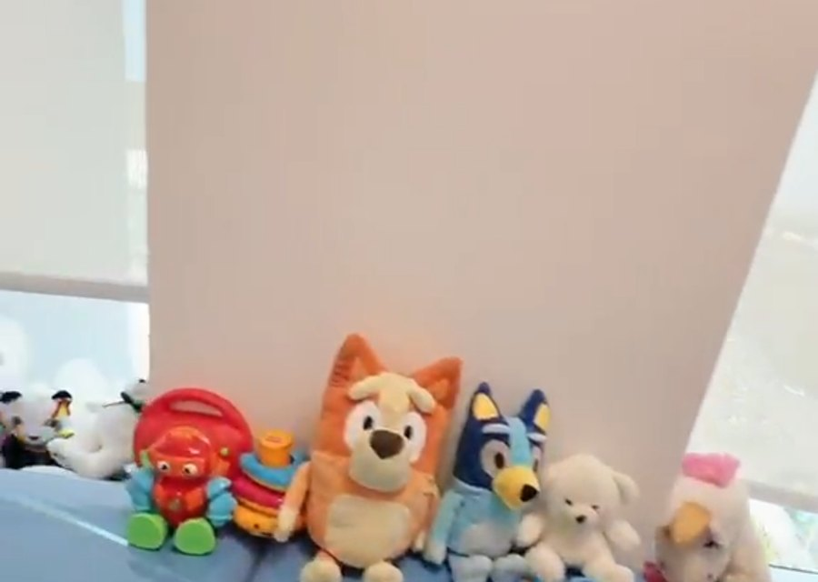

Alimentación complementaria sin miedo
De la leche a la cuchara: 6 a 12 meses, paso a paso.
$149.000Ver el curso →
Soy la Dra. Dalila Peñaranda, pediatra y especialista en nutrición infantil. Acompaño cada etapa del crecimiento con ciencia, calma y trato cercano — en un consultorio donde el mar recibe primero a los niños.

Consulta pediátrica y nutricional pensada para el bienestar integral de tus hijos.
Seguimiento del crecimiento, vacunas y prevención en cada etapa.
Diagnóstico completo y plan de alimentación realista para tu familia.
Curvas, hitos y señales de alarma explicadas sin tecnicismos.
De la leche a la cuchara, paso a paso y sin culpas.
Sueño, rutinas y dudas del día a día, con acompañamiento cercano.
Atención por videollamada para familias en cualquier país.

Pediatra con especialización en nutrición infantil. Mi consulta se apoya en evidencia y en escuchar de verdad: entender la rutina de cada casa antes de recomendar. Atiendo en Barranquilla y por videollamada.

Vivo entre los corales del consultorio y acompaño a los niños durante la consulta. Si tu peque llega con miedo, yo lo recibo primero.
Hábitos alimentarios saludables desde los primeros años, con planes que sí caben en la rutina de la casa.
Seguimiento de la salud de tus hijos en cada etapa, con controles claros y prevención oportuna.
Un fondo de mar pintado a mano: corales, tortugas, estrellas y una ballena que recibe a cada niño.

La ballena de la entradaTe recibe con la tortuga y las estrellas de mar.
La recepciónCorales azules y dorados pintados sobre la pared.
La consultaAquí conversamos con calma y armamos el plan.
La sala de examenLa camilla celeste, custodiada por los peluches.Para ver a tu ritmo, desde cualquier país. Precios de ejemplo — pendientes de confirmar.
De la leche a la cuchara: 6 a 12 meses, paso a paso.

Menús escolares prácticos y sin peleas en la mesa.

Siestas, noches y despertares con rutinas respetuosas.
Atiendo con estas medicinas prepagadas y pólizas de salud.
¿Tu plan no aparece? Escríbeme y lo revisamos.
Escríbeme por WhatsApp y confirmamos el horario contigo.
High Park Medical Center, consultorio 129. Valoración completa con plan por escrito.
Videollamada desde cualquier país; plan e indicaciones por correo.
Contenido útil para el día a día. Títulos de ejemplo.
Porciones reales, apetito variable y señales de alarma.
Leer más →Hitos por edad y cuándo vale la pena consultar.
Leer más →Una guía tranquila para las noches intranquilas.
Leer más →Testimonios ilustrativos — se reemplazarán por reales.
Salimos con un plan claro y sin culpas. Mi hija por fin come verduras.
La consulta virtual fue igual de cercana, y vivimos en otro país.
Profesional, empática y muy dedicada. Explica todo con calma.
Desde recién nacidos hasta la adolescencia, incluyendo control de crecimiento y nutrición.
Por WhatsApp al +57 304 653 2006. Confirmamos horario y te envío las indicaciones previas.
Entre 45 y 60 minutos, con tiempo para revisar antecedentes, examinar y resolver dudas.
Sí. La consulta virtual se hace por videollamada y el plan llega por correo.
Agenda tu cita y construyamos juntos lo mejor para tus pequeños.